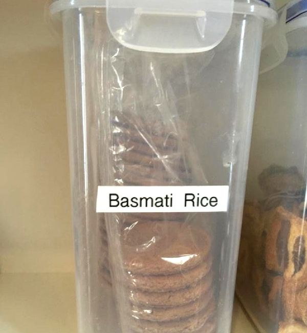
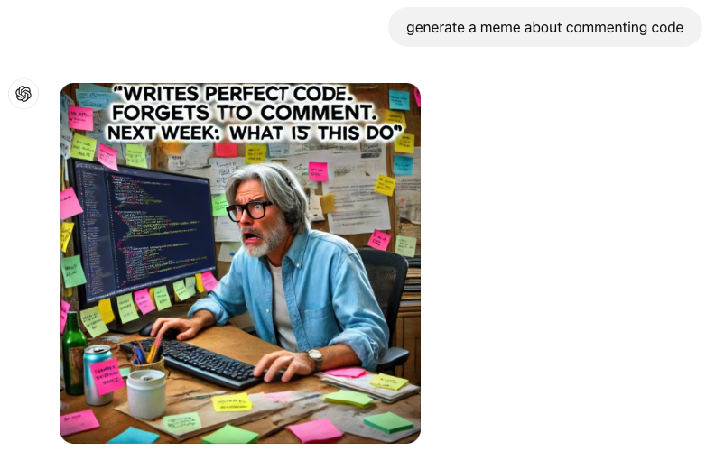
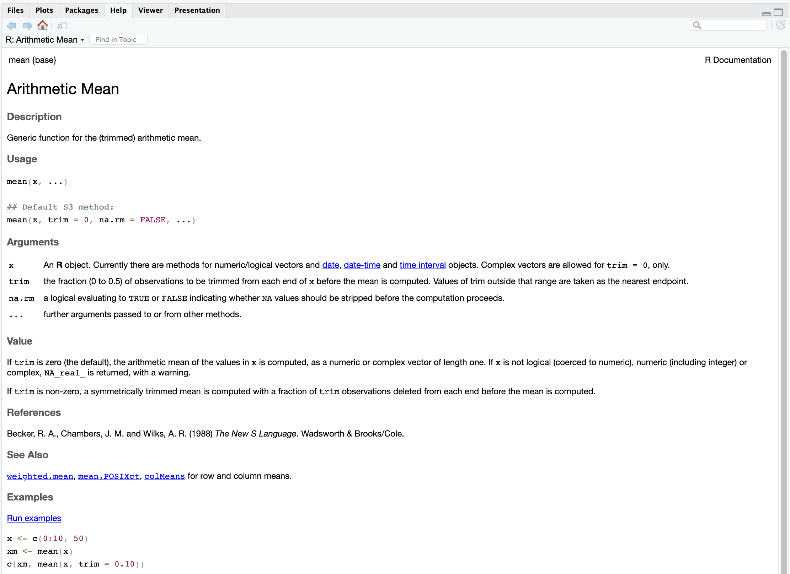

[1] 23 Coding basics
In diesem Kapitel lernen wir die Basics des Programmierens mit R. Hier mag einiges noch abstrakt und zusammenhangslos erscheinen. Die hier behandelten Konzepte werden aber im Verlaufe des Semesters immer wieder auftauchen und damit verständlicher werden.
3.1 Erstellung des ersten Skripts
Wie wir im ersten Kapitel gesehen haben ist ein Grund für die Verwendung von RStduio, dass wir damit R-Skripte erstellen und ausführen können. Wir könnten den Code zwar auch direkt in der Konsole ausführen, das ist jedoch mühsam und unübersichtlich. Deshalb erstellen wir als erstes ein neues R-Skript, in dem wir die hier besprochenen “Befehle” (Codes) sammeln und abspeichern. Dies hat auch den Vorteil, dass die ausgeführten Analysen reproduzierbar sind. Wollen wir die durchgeführten Analysen zu einem späteren Zeitpunkt nochmals wiederholen, öffnen wir einfach wieder das gespeicherte Skript und lassen dieses laufen (sprich “schicken” den Code an die R-Konsole).
Die Verwendung der Konsole ist sehr praktisch, zeichnet jedoch nicht auf, was wir gemacht haben. R-Skripte dienen genau diesem Zweck: Sie sammeln Ihre Befehle, die Sie als Datei speichern und jederzeit erneut ausführen können. Dies ist die erste Säule guter Codierung: reproduzierbare Codes.
Um ein neues Skript zu erstellen, kann man auf Datei -> Neues Dokument -> R-Skript klicken oder einfach Umschalt+cmd+N auf dem Mac oder Umschalt+Ctrl+N auf Windows drücken.
3.2 Code über Skripte ausführen
Im Grunde genommen ist R nichts anderes, als ein fancy Taschenrechner. So können wir die Summe von 1 + 1 berechnen:
Um diesen Code auszuführen müssen wir ihn wie gesagt an die Konsole “schicken”. Dies geschieht am einfachsten, indem man mit dem Cursor auf die Zeile klickt, die man ausführen möchte (die horizontale Position spielt dabei keine Rolle) und dann Ctrl + Enter (Windows) oder Cmd + Enter (Mac) drückt.
Um diesen Code auszuführen, müssen Sie ihn über die Konsole ausführen, was auf verschiedene Arten geschehen kann. Der offensichtlichste Weg ist, ihn in die Konsole zu kopieren und einzufügen, was jedoch nicht sehr effizient ist. Am schnellsten ist es, den Cursor in die Zeile zu bringen, die Sie ausführen möchten, und cmd+Return oder Strg+Eingabe zu drücken.
Tipp: Man mann mehrere Zeilen auf einmal auswählen und dieselbe Methode verwenden, um mehrere Codes (Codeblock) auf einmal auszuführen.
Neben zahlen versteht R auch Zeichen (Text), dabei müssen wir jedoch vor und nach dem Text die Anführungszeichen ’ oder ” verwenden:
Dies müssen wir tun, damit R weiss, dass es sich bei diesem Text nicht um Code handelt, den R interpretieren (ausführen) soll. Tun wir dies nicht, sehen wir eine Fehlermeldung.
3.3 Variablen
Führen wir Code wie oben beschrieben aus, wird dieser ausgeführt und das Ergebnis erscheint in der Konsole. Das Resultat der Berechnung(en) wird jedoch nicht gespeichert. Oft wollen wir aber das Resultat unserer Berechnungen speichern. Wenn wir eine Regression berechnen, wollen wir das Resultat speichern, damit wir später wieder darauf zugreifen können. Um dies zu tun, können wir die Berechnung in sogenannten Objekten oder Variablen speichern. Diese Objekte/Variablen enthalten dann das Resultat unserer Berechnung. Der folgende Code speichert das Resultat der Berechnung 1 + 1 im Objekt resultat_der_berechnung
Beim Ausführen dieses Befehls scheint nichts zu passieren – zumindest wird im Konsolenfenster nichts angezeigt, nur der Befehl wird ausgeführt. Allerdings erscheint eine neue Variable im Environment-Fenster im Abschnitt Werte (Values), mit dem Namen resultat_der_berechnung und dem Wert 2. Dies zeigt uns an, dass diese Variable in der aktiven R-Session gespeichert wurde und wir später wieder darauf zugreifen können (die Variable ist jedoch nur solange gespeichert, bis wir RStudio schliessen!).
3.4 Coding best practices
Bevor wir uns vertieft mit der Syntax (Grammatik) von R beschäftigen, besprechen wir ein paar “best practices” die das Programmieren in R langfristig erleichtern.
3.4.1 Sinnvolle Variablennamen
Durch das Ausführen verschiedener Berechnungen werden wir schnell mehrere Objekte/Variablen in der “Environment” haben. Damit wir da nicht den Überblick verlieren, ist es wichtig, diese Objekte sinnvoll zu benennen. Sinnvoll liegt hier im Ermessen des Programmierenden. Es gibt jedoch zwei häufig verwendete Namenskonventionen und ein paar Symbole, die nicht verwendet werden können.
Die Namenskonvention in der Programmierung hat im Großen und Ganzen zwei große Zweige. Der eine nutzt Großbuchstaben, der andere Unterstriche. Beide sind gut, aber versuchen Sie, sie nicht zu mischen. Sie sind völlig frei, jeden Variablennamen zu verwenden, aber beachten Sie immer die drei Anforderungen:
- snake_case:
- Die erste Konvention heisst
snake case. Dabei trennt man Wörter in Variablennamen mit einem Unterstrich_.
- CamelCase:
- Die zweite Konvention heisst
camel case. Dabei werden Wörter durch Grossbuchstaben getrennt.
Snake Case wird etwas häufiger verwendet und ist meiner Meinung nach besser lesbar, deshalb verwenden wir in diesem Skript diese Namenskonvention. Einige Zeichen dürfen/können nicht für Objektnamen verwendet werden (-,.,!~=&^%$). Zudem dürfen Objektnamen nicht mit Zahlen beginnen. Darüber hinaus sind der Fantasie keine Grenzen gesetzt. Kürzere Objektnamen sind jedoch zu bevorzugen. Obwohl wohl jedem klar wird, was in dem Objekt mit dem Namen das_resultat_der_ersten_regression_meiner_bachelorarbeit gespeichert wird, ist der Name wohl etwas zu lange. Was wäre ein guter, aber kürzerer, Name?

3.4.2 Kommentare
Das Kommentieren des geschriebenen Codes ist fast genau so wichtig wie der Code selbst. Zeilen, die mit dem #-Zeichen beginnen, werden von R als Kommentar erkannt und nicht ausgeführt:
Das Kommentieren hat zwei Zwecke:
Jemand anderem (oder dem zukünftigen Ich!) mitteilen, was der Befehl in der nächsten Zeile tut (oder tun soll…)
“In-progress” Code oder alten Code auskommentieren, damit er nicht ausgeführt wird, jedoch noch ersichtlich ist. Um Code auszukommentieren kan man die Tastenkombination cmd+shift+c (Mac) oder ctrl+shift+c (Windows) verwenden. Markiert man dabei mehrere Zeilen, werden alle markierten Zeilen auskommentiert.
Tipp:: je länger man schon programmiert, desto eher vergisst man mal, den geschriebenen Code zu kommentieren. Dies liegt unter anderem daran, dass man den Code schneller lesen kann/versteht. Trotzdem ist es eine gute Gewohnheit, Code kontinuierlich zu kommentieren. Dies weiss auch ChatGPT:

3.5 Platzierung und Formatierung des Codes
Um Code lesbarer zu machen, gibt es sogenannte Style-guides die vorschreiben, wie man code strukturieren und formattieren soll.
Wir wollen hier nur zwei Grundsätze nennen:
- Abstände verwenden
- Längere codes/Skripte in Codeblöcke unterteilen, die durch Absätze getrennt sind
3.6 R-Objekte
Oben haben wir bereits ein R-Objekt erstellt, message_world, eine Variable mit einem einzelnen Wert, die ein Zeichen-R-Objekt enthielt. Objekte können verschiedene Werte enthalten. Hier ein paar Beispiele von solchen Werten, die zu unterschiedlichen Objektclassen führen:
R-Objekte:
- Zeichen (character) - auch bekannt als ‘string’. Jede Variable, die Buchstaben, Sonderzeichen oder Zahlen zwischen ’’ oder “” enthält. Wenn Sie ein Zeichen erstellen, entscheiden Sie, ob Sie ’ oder ” verwenden und verwenden Sie sie konsistent.
- numerisch - jeder numerische Wert wird im Allgemeinen als ‘double’ bezeichnet.
- integer - Ganzzahl. Ein zusätzliches ‘L’ wird neben dem Wert im ‘Environment’ Fenster angezeigt, um zu zeigen, dass es sich um einen Integer und nicht um einen numerischen (‘double’) Wert handelt.
- logisch - hat nur zwei Werte: TRUE oder FALSE, möglicherweise nachdem eine Aussage ausgeführt und als wahr oder falsch bewertet wurde
- Faktor - spezielles R-Objekt, das wir in späteren Vorlesungen besprechen werden.
Wir können den Typ eines Objektes mit der Funktion typeofermitteln:
3.7 Operationen mit numerischen Werten
Man kann numerische Variablen ähnlich wie Zeichenwerte definieren:
Jetzt können wir anstelle der Zahlen 2 und 3 a und b verwenden, wenn wir mathematische Operationen durchführen:
Wir können neue Variablen erstellen, die durch bereits vorhandene Variablen definiert sind:
3.8 Operationen mit logischen Werten
Logische Operatoren kann man verwenden um zu prüfen, ob zwei Werte/Objekte identisch sind oder nicht.
Überprüfen, ob Werte gleich sind, mit dem == Befehl
Überprüfen, ob zwei Variablen/Objekte identisch sind,
Überprüfen, ob eine modifizierte Variable gleich der anderen ist,
Man kann auch überprüfen, ob die zwei Variablen nicht gleich sind, mit dem != Befehl:
Es ist auch möglich, komplexere Vergleiche mit mehreren Aussagen zu machen. Z.B. können wir vergleichen, ob 2==2 und 3==2 mit dem & Operator:
oder, ob 2==2 oder 3==2 mit dem | Operator
Hinweis: Später werden wir den Unterschied zwischen &, | und &&, || Operatoren besprechen.
3.9 Operationen mit R-Objekten
Im Allgemeinen haben unterschiedliche R-Objekte unterschiedliche Grundoperationen. Die wichtigsten Grundoperationen sind die zuvor erwähnten numerischen und logischen Operationen.
3.10 Einfache Funktionen
Wir brauchen R natürlich nicht, um einfache Berechnungen wie oben aufgeführt durchzuführen, sondern um etwas komplexere Berechnungen wie zum Beispiel Regressionen durchzuführen. Hier kommen Funktionen ins Spiel. Funktionen haben einen oder mehrere Inputs, stellen mit diesem Input etwas an, und ergeben dann einen Output.
Bis jetzt haben wir schon einige Funktionen gesehen, auch einfache Berechnungen wie 2 + 3 basieren auf der + Funktion. In der Regel sind Funktionen aber etwas komplexer, indem sie eine Reihe von Berechnungen bündeln. Funktionen sind durch ihren Namen definiert und wie folgt aufgebaut:
name(input)
wobei name der Name der Funktion ist, der R mitteilt, welche Funktion (sprich Berechnung) mit dem Input ausgeführt werden soll. Funktionen verwenden immer ( und ) Klammern, und innerhalb der Klammern müssen Sie den Input definieren, die von der Funktion abhängt. Auch die + Funktion kann in diesem Format verwendet werden:
Ein Beispiel für eine etwas komlexere Funktion ist die Funktion mean, die den Mittelwert berechnet:
Dieses Beispiel zeigt auch, dass Funktionen genestet werden können. Dann werden, genau wie in der Mathematik, die Funktionen von innne nach aussen ausgeführt. Um R Code lesbarer zu machen, sollte man genestete Funktionen wenn möglich vermeiden. So kann man en obigen Code auch so schreiben:
So haben wir die beiden Funktionen voneinander getrennt und den Code so lesbarer gemacht. Wenn wir mehr über eine Funktion erfahren möchten, können wir das mit dem ? Symbol tun, also ?name:
Dadurch wird das Hilfefenster aufgerufen, wo wir mehr über die Funktion erfahren (erwartete Inputs, Argumente, Output). Die Hilfeseite der Funktion meansieht wie folgt aus:

Diese Hilfeseiten sehen zu Beginn etwas kryptisch aus, enthalten aber fast alles, was es über eine Funktion zu wissen gilt. Besonders wichtig ist der Abschnitt Arguments. Dort werden alle Inputs gelistet, die eine Funktion erwartet.
Wir sehen, dass das erste Argument der Funktion mean x heisst und einen Vektor erwartet. Generell ist es eine gute Konvention, Inputs mit Namen den entsprechenden Argumenten zuzuweisen, also
Dies ist jedoch nicht zwingend. Wenn wir die Namen weglasssen, werden die Inputs der Reihe nach den entsprechenden Argumenten zugewiesen. Deshalb funktioniert auch die Schreibweise mean(numeric_vector). Bei Funktionen, die häufig verwendet werden und (oft) nur einen Input brauchen, wird der Name des Arguments auch häufig weggelassen.
3.11 Variablen: Kombinieren mehrerer R-Objekte in einer Variable
Durch die Verwendung einer einfachen, aber sehr wichtigen, Basisfunktion können wir mehrere numerische Werte zu einem Vektor zusammenfassen. Wir haben diese Funktion bereits bei der Berechnung des Mittelwerts oben verwendet, nämlich die c()Funktion.
Jetzt haben wir zwei Vektoren, die wir verwenden können, um verschiedene Vektoroperationen durchzuführen, wie Addition, Multiplikation usw.
In diesem Kontext ermöglicht uns die Vektorisierung, Operationen alle Elemente der Vektoren gleichzeitig auszuführen, anstatt einzelne Elemente in einer Schleife zu bearbeiten. Diese Methode ist nicht nur effizienter, sondern auch einfacher zu schreiben und zu lesen.
Wenn wir also wie oben zwei Vektoren in R haben und eine Operation wie Addition ausführen, führt R die Addition elementweise durch. Das bedeutet, dass jedes Element des Vektors v mit dem entsprechenden Element des Vektors z addiert wird. Das Ergebnis ist ein neuer Vektor, dessen Elemente die Summen der entsprechenden Elemente von v und z sind.
Diese Art der Vektorisierung ist besonders mächtig, da sie es uns erlaubt, komplexe Berechnungen mit sehr wenig Code effizient durchzuführen. Im Gegensatz zu Schleifen (“Loops”), die in vielen anderen Programmiersprachen verwendet werden, kann die Vektorisierung Code vereinfachen und beschleunigen, indem sie interne Optimierungen von R nutzt.
Wenn wir die Vektorisierung verwenden (was R autmomatisch tut) müssen wir schauen, dass die Inputs die Selbe Länge haben. Dies können wir mit der length()Funktion überprüfen:
Verwenden wir die Vektorisierung, obwhol die beiden Elemente nicht die selbe Länge haben, werden wir von R gewarnt:
Warning in b + z: longer object length is not a multiple of shorter object
length[1] 4 6 8R wendet in diesem Fall trotzdem Vektorisierung an, recycelt aber den kürzeren Vektor. Es finden also folgende (elementenweisen) Berechnungen statt: 1 + 3, 2 + 4, und 1 + 7. Der kürzere Vektor wird also recycelt (das erste Elemnt von bwird zwei mal verwendet). Hat der kürzere Vektor eine Länge von 1, werden wir hingegen nicht gewarnt:
Nebenbemerkung: die c() Funktion kann auch verwendet werden, um Vektoren zu verbinden:
3.12 Indizierung
Oft werden wir in R mit Ojekten/Daten arbeiten, die deutlich grösser/länger sind als die, die wir bis jetzt verwendet haben. Oft wollen wir dabei aber Berechnungen durchführen, die nur einen Teil der Daten betreffen. Zum Beispiel den Mittelwert für eine Variable getrennt nach dem Geschlecht der ProbandInnen. Dabei kommt die sogenannte Indizierung ins Spiel.
Durch Indizierung können wir bestimmte Teile eines Vektors auswählen. Dies tun wir mit eckigen Klammern []. So können wir zum Beispiel das erste Element eines Vektors auswählen:
oder das erste und das dritte:
Wenn wir längere Vektoren haben, hilft die : Funktion bei der Auswahl. Die :Funktion generiert ein Intervall von Ganzzahlen:
So können wir zum Beispiel die Elemente 2 bis 3 auswählen:
Die Indizierung ist sehr wichtig uns wird uns noch häufiger begegnen.
3.13 Spezielle Variablen/Werte
3.13.1 Leere Variable
Es gibt einen Nullvektor oder eine leere Variable, die nichts enthält. Später werden wir sehen, dass dies nützlich ist für die Programmierung von Loops.
3.13.2 NA- oder NaN-Wert
Wenn ein Wert fehlt oder unbekannt ist, wird er normalerweise als NA oder NaN gekennzeichnet. NA steht für unbekannten Wert, während NaN für „Not-a-Number“ steht, speziell für fehlende numerische Werte entworfen. In der Praxis sind sie auf unserem Niveau jedoch im Wesentlichen gleich, und wir werden eher NA verwenden.
Der Umgang mit NA-Werten ist ziemlich gleich: sie reagieren nicht auf Operationen und bleiben NAs:
In anderen Fällen können fehlende Werte jedoch tükisch sein, zum Beispiel beim Berechnen des Mittelwertes:
Der Mittelwert ist in diesem Fall nicht definiert, weil wir den Wert einer Zahl nicht wissen.
3.13.3 Inf-Wert
In R steht Inf für ‚Unendlich‘, was sich von NA unterscheidet, da es für eine sehr große Zahl steht. Es wird normalerweise angetroffen, wenn eine mathematische Operation keinen Wert hat, aber im Grenzfall gegen Unendlich konvergiert, wie zum Beispiel:
Sie können auch eine Variable definieren, die einen unendlichen Wert hat, und Operationen damit durchführen,
3.13.4 Gut zu wissen: Rundungsgenauigkeit in R
Auch wenn R ein sehr mächtiger Taschenrechner ist, hat er auch seine Limitationen. So kann R die Genauigkeit von Zahlen nur bis zu einem gewissen Grad räpresentieren. Dies kann dann zu kleinen Ungenauigkeiten und verblüffenden Ergebnissen führen:
Wir können die Berechnungen mit der round Funktion runden um zu schauen, wie genau R die Zahlen repräsentiert. Runden wir die Zahlen auf 14 Nachkommastellen, erhalten wir das erwartete Resultat:
Jedoch nicht mehr, wenn wir auf 15 Nachkommastellen runden:
Für Forschung wie wir sie in den Sozialwissenschaften betreiben reicht dies jedoch mehr als aus.
3.14 Variablentypen
Wir haben nun schon einige Variablentypen gesehen (z.B. Vektoren). Hier eine kurze Übersicht von weiteren, häufig verwendeten Typen:
- Vektoren: enthalten nur dieselben R-Objekte (Werte) in einem eindimensionalen Vektor
- Listen: können unterschiedliche R-Objekte als Elemente mischen
- Matrizen: enthalten dieselben R-Objekte (Werte) in einer zweidimensionalen Matrix
- Arrays: ermöglichen mehrdimensionale Matrizen
- Faktoren: ein spezieller Vektor, der kategoriale oder ordinale Werte enthält. Wir werden diese in späteren Klassen sehen
- Dataframe: enthalten Daten, im Grunde eine flexible Matrix, die unterschiedliche Vektoren mit unterschiedlichen R-Objekten enthalten kann und organisiert ist, als hätte sie Variablen und Beobachtungen. Wir werden dies im nächsten Kapitel genauer besprechen.
3.14.1 Vektoren
Wir haben bereits numerische Vektoren erstellt. Nur der Vollständigkeit halber können wir auch Zeichen- und logische Vektoren erstellen:
Zu tun: Versuchen Sie, unterschiedliche R-Objekttypen in einem Vektor zu mischen! Was passiert? Spielen Sie mit verschiedenen Typen und überprüfen Sie mit der Funktion typeof!
3.14.2 Listen
Listen sind sehr nützlich, um unterschiedliche Typen von R-Objekten zu kombinieren. Diese werden über die Funktion list() erstellt:
wobei my_list diese unterschiedlichen Typen kombiniert. Wenn man aufpasst, ist leicht zu erkennen, dass die Ausgabe anders ist als bei einem einfachen Vektor. Tatsächlich ist sie so strukturiert, dass sie 3 Elemente hat und innerhalb jedes Elements ein R-Objekt oder möglicherweise ein Vektor ist:
[[1]]
[1] "a" "b"
[[2]]
[1] 1 2 3
[[3]]
[1] FALSEmy_list2 zeigt, dass Listen im Wesentlichen unterschiedliche Vektoren in ihren Elementen speichern, und diese Vektoren müssen die gleichen R-Objektwerte in ihnen haben, aber die Länge kann unterschiedlich sein.
Da Listen auf diese Weise erstellt werden, unterscheidet sich die Indizierung ein wenig. Sie können die unterschiedlichen Elemente ähnlich wie bei den Vektoren auswählen:
und das ausgewählte Element wird immer noch ein Listentyp sein. Wenn Sie den Vektor aus diesem bestimmten Element haben möchten, müssen Sie doppelte Klammern verwenden:
und schließlich können Sie bestimmte Elemente aus dem Vektor, den Sie ausgewählt haben, auf folgende Weise erhalten:
Diese Art der Indizierung wird praktisch sein, wenn man mit Listen arbeitet und auch hilft, besser zu verstehen, wie man mit Datentypen von Datenrahmen arbeitet.